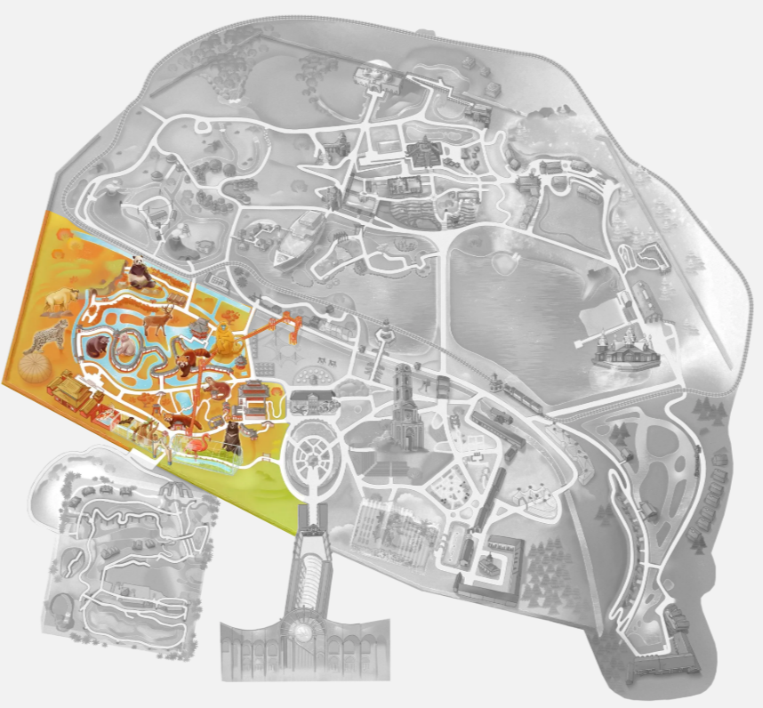

Les îles du soleil levant

Ce monde est un hommage à la culture et à la nature chinoise. Entre les chemins paisibles, les ponts, les paysages soignés et le charme du pavillon chinois, ce lieu évoque la beauté et la sérénité de la Chine ancestrale.
Grand de 4,5 hectares, c'est le plus grand jardin chinois hors de Chine.
L'architecture du monde
Cour du marchand de thé
A gauche de l'aquarium, au fond la cour où on peut faire un bain de pieds avec des petits poissons, se trouve un édifice avec une cour. XXX Près de la grotte du rideau d'eau, Bambou Chaplin
Le jardin de Yi King
Le thème du jardin est le Yi King, un jeu divinatoire pratiqué depuis des lustres dans l'Empire du Milieu. On s'assied sur un siège de pierre, comportant un trigramme (symbole). On fait ensuite rouler une grosse boule dans le rail circulaire, et on attend qu'elle se fige devant l'un des sièges de pierre. La combinaison du trigramme sur lequel vous êtes assis, et celui du siège devant lequel la boule s'est arrêtée, vous donne un numéro. Il vous suffit de retourner la plaquette qui correspond à ce numéro, et vous y découvrirez ce que le Yi King vous conseille pour l'avenir.
Le Gong
A droite du jardin de Yi King, on trouve un arche. En passant l'arche, au sommet de 2 volées d'escaliers, un gong permet de faire un voeu. Mais il faut réussir à faire un seul coup.
Le long des marches, une fresque scultpée représente des 12 sages de la tradition chinoise
Le temple de la compassion
En repassant devant le jardin de Yi King, on prend ensuite à hauche vers le temple. C'est un temple authentique réalisé par des artistes chinois.
Circuit du chemin de la guérison
1,5 million de pierres ont été dressées sur le chemin du jardin chinois, pour masser les pieds et reposer. On peut le parcourir pieds nus.
Le circuit contient 22 fenêtres en terre cuite. La première, en forme de papillon, rend hommage au rêve du sage Tchouang Tseu. Le sage avait rêvé qu'il était un papillon voletant joyeusement. À son réveil, il ne savait plus s'il était un homme venant de rêver qu'il était un papillon, ou un papillon rêvant qu'il était Tchouang-Tseu. Cette métaphore brise nos certitudes sur le monde éveillé qui n'est peut-être qu'une construction mentale.
On y trouve 24 mosaïques au sol. Certains galets sont en jade.
Maison de thé
C'est une fidèle reconstitution de la plus ancienne maison de thé de Shanghai, vieille de plus de 3 siècles. Elle est peinte en rouge, couleur traditionnelle qui écarte les mauvais esprits. On peut y sentir et acheter des thés, voire en déguster à l'étage.
Les trésors minéraux
Cristal de quartz géant
Juste après le gong, se dresse un énorme cristal de Minas Gerais au Brésil, un des plus gros au monde. Il faudrait 3 personnes qui se tiennent les mains bras tendus pour l'encercler. Il est haut de 2,2m et pesant 4750 kg. Il est légèrement rosé, d'où son nom de Quartz hématoïdes. Il est associé à la confiance en soi et aux énergies positives.
Lapiz lazuli
Près du temple de la compassion, on trouve plusieurs lapiz lazuli. Ses vertus: il allège les problèmes d’insomnie, contribue à débloquer la parole en cas de colère ou frustration, apaise les symptômes d’allergies, notamment respiratoires, encourage une meilleure confiance en soi, soulage les maux de tête et ventre.
Les animaux dans ce monde
Autres animaux de ce monde
Les trésors végétaux
Pen Jings
On trouve des arbres Pen Jings dans de hauts vases noirs décorés. Ces arbres sont symbole de longévité et compagnon sur la route de l'immortalité. Les Pen Jings sont des représentations miniature d'espaces de nature (pierre + arbres), à l'instar des bonsais qui sont de mini arbres.
Arbre à souhaits
On trouve aussi un arbre à souhaits, avec des bandelettes rouges accrochées. On peut y écrire un souhait.